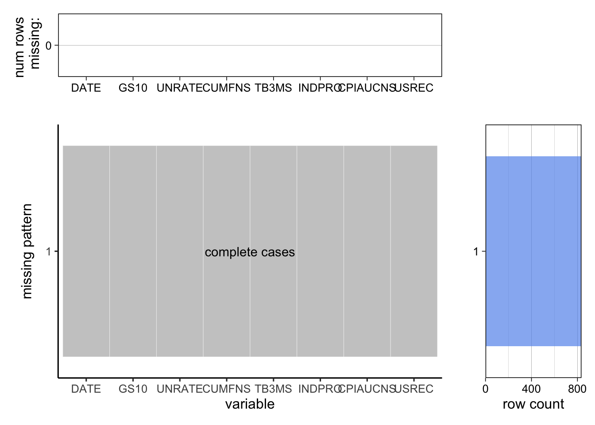

Chapter 3 Data
As discussed before we will be merging 7 different dataset into and 8’th one being our target variable recession the final dataset will not be of the same size as of the biggest one because each individual dataframe doesn’t have same range of dates which is the common feature between all of them based upon which we will merge the data into one. The most logical join for this problem will be to use the inner join that will keep the date column common to each one of then and accordingly append the other columns of the dataset. To do this in R programming language we will have to use the function merge which by default does inner join moreover out of many available ways we have chosen to do that using nested merge.
3.1 Sources
We have used all the datasets downloaded from FRED (Federal Reserve Economic Data) with an average of monthly update on their dataset.
3 months Bill rate: https://fred.stlouisfed.org/series/TB3MS
Capacity Utilization, Manufacturing: https://fred.stlouisfed.org/series/CUMFNS
Industrial Production: https://fred.stlouisfed.org/series/INDPRO
CPI Index: https://fred.stlouisfed.org/series/CPIAUCNS
10 Years Rate: https://fred.stlouisfed.org/series/GS10
Unemployment Rate: https://fred.stlouisfed.org/series/UNRATE
Recession Indicator: https://fred.stlouisfed.org/series/USREC
3.2 Cleaning / transformation
months_bill <- read.csv('./TB3MS.csv')
capacity_utilization <- read.csv('./CUMFNS.csv')
industrial_prod <- read.csv('./INDPRO.csv')
cpi_index <- read.csv('./CPIAUCNS.csv')
year_rate_10 <- read.csv('./GS10.csv')
unemployment_rate <- read.csv('./UNRATE.csv')
us_recession <- read.csv('./USREC.csv')
colnames(months_bill)## [1] "DATE" "TB3MS"colnames(capacity_utilization)## [1] "DATE" "CUMFNS"colnames(industrial_prod)## [1] "DATE" "INDPRO"colnames(cpi_index)## [1] "DATE" "CPIAUCNS"colnames(year_rate_10)## [1] "DATE" "GS10"colnames(unemployment_rate)## [1] "DATE" "UNRATE"colnames(us_recession)## [1] "DATE" "USREC"#All have common col called DATE, and since our target variable is recession we have to get data filtered according to the available DATE in recession table.
data <- merge(x = year_rate_10,
y = merge(x = unemployment_rate,
y = merge(x = capacity_utilization,
y = merge(x = months_bill,
y = merge(x = industrial_prod,
y = merge(x = cpi_index,
y = us_recession), by = 'DATE'), by = 'DATE'), by = 'DATE'), by = 'DATE'), by = 'DATE')
which(is.na(data))## integer(0)#write.csv(data, './recession_forecasting_data.csv')Each dataframe have a common value named DATE on which we will merge, to do that as explained before we will inner join the frames using merge function that does it by default, since our initial data frames doesn’t had NaN values, our resulting values is not showing signs of NaN or missing values. This can be shown in a graphical way in the following section.
3.3 Missing value analysis
install.packages("remotes")## Error in install.packages : Updating loaded packagesremotes::install_github("jtr13/redav")
install.packages("redav")## Error in install.packages : Updating loaded packageslibrary(redav)
plot_missing(data, percent = FALSE) Notice that there are three parts in the plotted graph. The top part shows the number of missing values in each column. The middle part presents the missing patterns and the right part shows the counts for each missing patterns. If there had been any missing values, it would have been displayed in the middle part of the graph and the top part would have shown the number of those missing values and the right part would have shown the counts for each missing patterns. But our data set doesn’t have any missing values so the graph is empty with num of rows missing and the row count of missing values being zero.